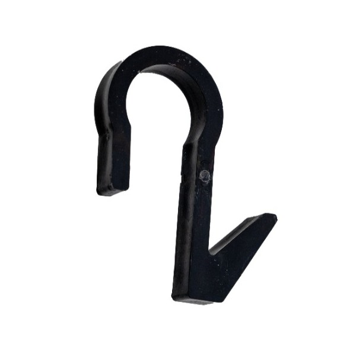
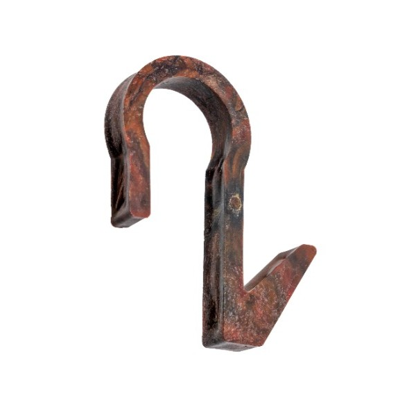
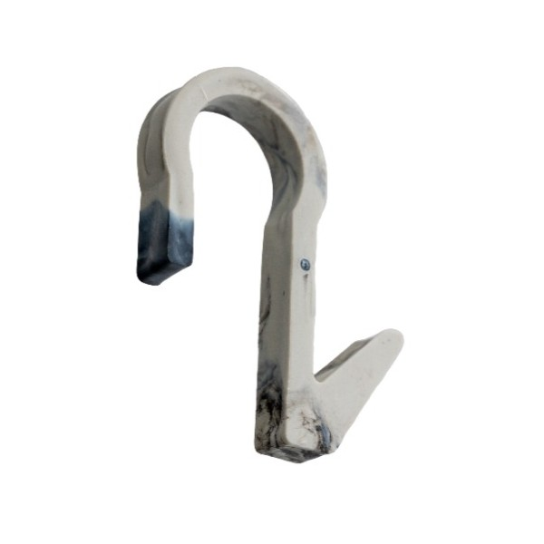
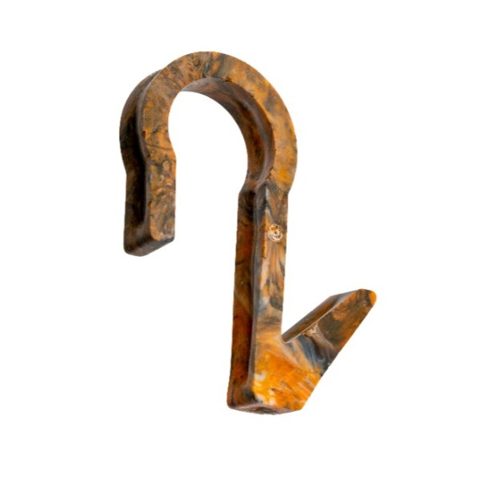
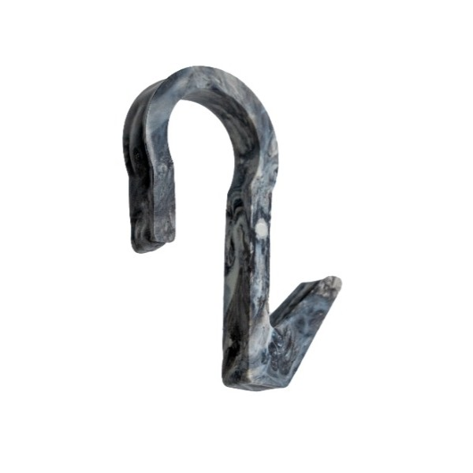

Das Projekt geTHooked entstand im Rahmen der Vorlesung
Projektmethoden innerhalb des Masterstudiengangs
Verfahrens- und Chemietechnik an der TH Mannheim.
Dort entwickeln wir als Vorlesungsgruppe ein eigenes Projektthema
und übernahmen die komplette Planung sowie die praktische Umsetzung des Projekts.





Mit unserem selbst hergestellten Kleiderhaken aus recyceltem Kunststoff
verbessern wir die Ausstattung der Hochschultoiletten sichtbar.
Gleichzeitig zeigen wir, wie Studierende eine Idee aus dem Hörsaal heraus
eigenständig zu einem funktionsfähigen Produkt entwickeln können.
Der maker.space spielt dabei eine wichtige Rolle.
Dort produzieren wir unsere Haken mithilfe des Spritzgießverfahrens
und setzen so unser Konzept technisch um.
Dabei bietet geTHooked einen deutlichen Mehrwert für die TH Mannheim.
Die Hochschule erhält ein greifbares und nachhaltiges Studierendenprojekt.
Die Öffentlichkeitsarbeit gewinnt authentische Beispiele für eine engagierte
und moderne Campusgemeinschaft. Der maker.space kann anschaulich
demonstrieren, welche studentischen Ideen dort umgesetzt werden und welches
Potenzial in seiner Infrastruktur steckt.
Der Kleiderhaken soll jedoch nur die Startlinie sein.
Wir möchten geTHooked als Ausgangspunkt für einen langfristigen
Kunststoffkreislauf an der Hochschule nutzen.
Dieser soll das Sammeln, Aufbereiten und Wiederverwenden von Kunststoffabfällen ermöglichen.
Damit diese Idee wachsen kann, braucht es weitere Beteiligte,
neue Projekte und zusätzliche Impulse.
Also meldet euch gerne bei uns!
maker.space
Der maker.space ist der offene Werkraum der inno.space – Design Factory Mannheim.
Er bietet Studierenden und Forschenden die Möglichkeit, eigene Ideen in die Realität umzusetzen,
Prototypen zu entwickeln und moderne Fertigungstechnologien praktisch zu erleben.
In dieser kreativen Umgebung treffen verschiedene Fachrichtungen aufeinander,
wodurch innovative Ideen, interdisziplinärer Austausch und gemeinsames Lernen gefördert werden.
Durch die Unterstützung und die bereitgestellten Maschinen des maker.space konnten wir
unsere Konzeptidee in ein greifbares Produkt verwandeln: Aus recyceltem Kunststoff, der zunächst
geschreddert und anschließend in einer Injektionsmaschine aufgeschmolzen wird, entstand mithilfe
unserer selbst entworfenen Spritzgussform ein funktionsfähiges Produkt.
Für weitere Informationen zum maker.space einfach auf das Logo klicken.